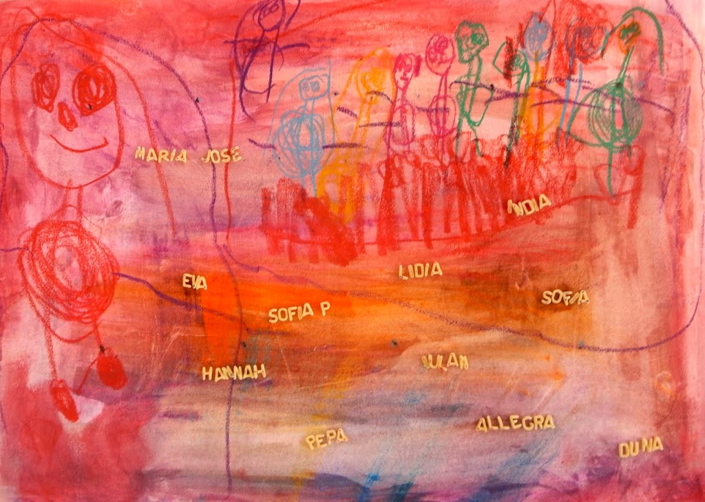

Hace siete años, Hannah dibujó a las niñas de su clase y escribió sus nombres con letras de pasta de sopa.
Es una idea sencilla para la vuelta al cole: dibuja y pinta a tus amigos o a tu familia y pega sus nombres con letras de sopa. Las letras se ven mejor sobre papel de color o si las pintas.
